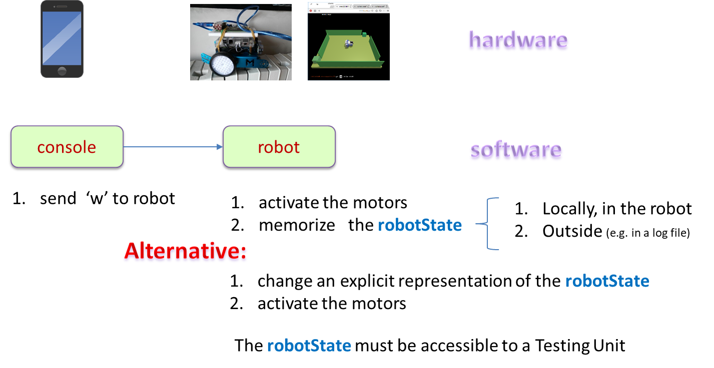

Requirements
Design and build a software system (
RobCmd) allowing the remote control of a
differential drive robot
(
Robot) by means of a
Console. The
Robot must be able to execute a set of
movement-commands
sent by the
Console:
- w: forward
- s: backward
- h: stop the robot movement
- a: rotate left
- d: rotate right
The
Console must run on a computational node different from that of the
Robot.
A first model
Structure
From the structural point of view, the system is composed by (at least) two components:
the console and the robot.
- Each component can be conceived as an autonomous entity that cannot have
any 'pointer' or 'reference' to the other (the system is distributed).
- Each component works in its won computational node
A proper model at this level can be described by using the 'custom' language (metamodel) named qak
(see :
System robcmd
Context ctxConsole ip [ host= "localhost" port= 8020 ]
Context ctxRobot ip [ host= "localhost" port= 8030 ]
QActor console context ctxConsole {
State s0 initial {
println ( "hello from console" )
}
}
QActor robot context ctxRobot {
State s0 initial {
println ( "robot ready" )
}
}
In the qak metamodel, a system is composed of a set of QActors, each working within a node
(Context) with a specific IP and an entry-port number.
Two actors can work in the same context.
|
Structure, interaction, behavior
In the qak metamodel, two actors can exchage information modeled as a Dispatch.
- The qak language provides a primitive (forward) to send (in asynchronous way) a dispatch
to an actor (including itself).
- The qak language does not provide any 'receive' operation, neither any 'callback' mechanism.
Rather it handles input information by structuring its behavior as a Finite State Machine.
System robcmd
Dispatch cmd : cmd(X) // X = w | s | a ...
Context ctxRobcmd ip [ host= "localhost" port= 8020 ]
QActor console context ctxRobcmd {
State s0 initial {
println ( "hello from console" )
forward robot -m cmd : cmd( w )
}
}
QActor robot context ctxRobcmd {
State s0 initial {
println ( "robot ready" )
}
Transition t0 whenMsg cmd -> handleCmd
State handleCmd{
printCurrentMessage
}
}
|
Towards a test plan
The Testing Unit (
TU) should:
- activate a console that sends to the robot a command (e.g. 'w')
- check (in automatic way) that the robot is moving according to the command sent (without using a Camera)
Current goals
Our current goals could be summarized as follows:
- express the logical interaction between the console and the robot
- express the logical behavior of the console (the sender) and the robot (the receiver)
- introduce an explicit representation of the state of the robot (robotState). For example: 'robot moving forward'
- make the robotState accessible to the TU

A more attractive scenario
Automatic testing is very useful during system development. However, in order to better understand the requirements
and to stabilize them, we aim at using a real (or a virtual) robot.
The intent is to show as soon as possible a working prototype to the customer, in order to have proper feedbacks.
A virtual robot
Let us start from the virtual robot described in
LabVirtualRobot
For an example of usage, see:
clientWenvTcpObj.kt
in project
it.unibo.robot2020.
A new requirement: the step command
Extend the software system
RobCmd so that the
Robot is also able to execute the following
movement-command
(always sent by the
Console):
- step: the robot moves forward for a prefixed time (e.g. 2 secs) and then stops.
Moreover, the robot must be always able to react 'immediately' to the
h command.